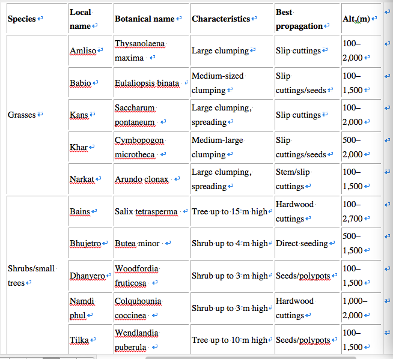
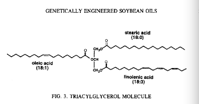

Formal Research Report
Bioengineering is also called biological engineering, it is basically a new science developed from the early 70’s of twentieth century. It is difficult to discovered bioengineering due to the complexity of this discipline, but it will solve lots of real-world problems as it become mature. Many biological scientists have been working on either theoretical or practical bioengineering in order to complete this discipline, and they already made some remarkable progress on this discipline. Although bioengineering does not help improving human’s lives, it would definitely contribute to our human society in the future as most of scientists believe and people wish.
So what is bioengineering more specifically? In increasing numbers, many people must have heard of this item during last few decades. More and more people started to pay some attention on bioengineering. Bioengineering is to solve real-world problems by using concepts and methods of biology and some of physics, chemistry, mathematics, and computer science. That means the development of bioengineering actually are based on these numerous disciplines, that also the reason of why it is hard and slow to make progress on bioengineering. Bioengineering needs a large amount of experts from different scientific fields working together to build its theories and implement experiments. Bioengineering was first used on controlling and eliminating infectious diseases, like smallpox and rabies, and it did have brilliant effect on helping human defend infectious diseases. By the virtues of the development of microbiology, immunology, molecular biology and a few other disciplines, the main focus of bioengineering has been shifted from the traditional idea, defending infectious diseases to a brand new level, researching on DNA. By analyzing DNA, scientists can recombine DNA and design the features of a DNA in order to change the genetic characteristics of cells. These human-made cells could be used on diagnostic reagents and therapy. There are basically five projects in bioengineering by now, genetic recombination, cell engineering, microbial engineering, enzyme engineering and bioreactor engineering. Bioengineering can apply on agriculture, industry, medicine, pharmacology, energy, environmental protection, metallurgy, chemical materials, etc. WTO claimed to eliminate to dispel smallpox by using bioengineering weapons within ten years, and this plan officially succeed in 1980. We can see how powerful and helpful bioengineering is from this case. Bioengineering will have huge impact on policy, economics, military, and livelihood in the future because of its various uses.
The first example of application of bioengineering is solving the soil degradation in Nepal. According to Soil Bioengineering Application and Practices in Nepal (2012) by Yam Prasad Dhital, Rijan Bhakta Kayastha, and Jiancheng Shi, soil bioengineering has been applied on Nepal to control soil degradation for last three decades. Nepal is a small mountainous country located in the central of the Himalayas. Because of the unstable landscape, Nepal’s soil was suffering from the water-induced disaster, like soil erosion, landslides, earthquake, cloudbursts, flooding, and debris flow. These disasters jeopardized human life and property for a long time. In addition, various altitudes of slopes from 150 to 1,500 m, deforestation and high intensity of rainfall also adversely affect Nepal. Base on the climate, geology, and vegetation of Nepal, scientist used five soil bioengineering methods, brush layering, palisades, live check dams, fascines and vegetative stone pitching to solve this problem. The main idea of soil bioengineering to used live plants and other natural materials to control erosion and other water-induced disaster. This techniques has been using to control soil degradation from a thousands years ago, but it was developed and became more modernize and scientific. More specifically, as the article indicated, “In general trend, soil bioengineering is the use of living vegetation either alone or in conjunction with small-scale civil engineering structures and non-living plant material, to reduce shallow-seated instability erosion on slopes, and flood hazard minimization in plains with stream bank protection”.
In this case, scientists use vegetation to control farmland erosion. The first part of vegetation is active protection. Active protection includes constructing rain drop interception (Woo and others 1997), water infiltration in soil Cerdà 1998), thermal regulation (Roviera and others 1999) and soil fixation by root systems(Gyssels and Poesen 2003). Rain drop interception prevents rain from flooding fields and crops; water infiltration provides moderate amount of water for crops; thermal regulation provide proper temperature for crops. These engineering insured most of fields and crops would not be adversely affected by huge amount of rainfall. The second part of vegetation is passive protection, using plants roots to trap and fix sediments in the aerial parts in the main point of passive protection. Most of plant roots have excellent innate ability to stabilize soil in order to survive from strong winds. Scientists chose some plants with best capabilities of fixing stabilize soil like grasses, shrubs, and large trees and planted these species in the area where suffered from erosion. This biological way immobilizes soil in the ground. The combination of engineering and plant roots fixation is a perfect instance of bioengineering. Riparian vegetation played a significant role on controlling the erosion on stream banks. Stream bank erosion is factually a natural process, but it did negatively affect human life near rivers. Riparian vegetation is basically the same with the passive protection used in controlling farmland erosion I just discussed above. Riparian plants not only fix soil near rivers, but also significantly reduce the flow velocities so that the flow will have less impact on the soil. Additionally, riparian plants decrease the transport capacity of flow, so there are more sediments remain in the river banks. As this article pointed out, “Nepal’s rivers carry around 336 million tons of soil per year to the main river systems entering India (Brown 1981)”. Soil bioengineering did save many people’s property in Nepal.
The engineering part of soil engineering is easy for scientists since human engineering is well developed, further more, rain drop interception, water infiltration, and thermal regulation do not require high level of engineering knowledge. The vegetation part of soil engineering is not hard for scientists either. Scientists did not need to recombine the DNA for plants for creating new species with a high capacity of fixing soil characteristic, they just picked them from ecosphere. All in all, soil bioengineering is a relatively simple and successful example of application of bioengineering. When DNA recombination get involve in bioengineering, things get more complicated. It takes lots of effort to recombine DNA, however, it does contribute to solve real-world problem and generate a great deal of economic profits.
Oil is an indispensable grocery in our lives. The peanut oil and butter we normally use, however, have some negative effect on our bodies. Too much peanut oil and butter will cause coronary heart disease and some others diseases. So people started to use olive oil, maize oil, and soybean oil. According to Development of Genetically Engineered Soybean Oils for Food Applications (2007) by Anthony J. Kinney, scientists have recombined the DNA of soybean and designed a new soybean specie called bleached and deodorized (RBD) soybean that protect people from coronary heart disease and others possible diseases caused by peanut oil and butter. Scientist changed the gene of the triacylglycerol molecule which is the main part of soybean. The main process of cytoplasm as this article claimed is below:
In the cytoplasm, the acyl chains are esterified to another protein, coenzyme A (CoA). Some of the 18:l-CoA is incorporated into membrane phosphatidylcholine (PtdCho), where it is desaturated to linoleoyl ( 18:2)-PtdCho and linolenyl( 18: 3)-PtdCho by microsomal membrane-associated desaturases. The desaturated acyl chains are then returned to the cytoplasmic acyl-CoA pool.
Although genetically modified organisms have comparative advantages over natural crops and occupy a big role in economics, some experts still are against genetically modified food because it also brings some other problems.
In the article, Biotechnology risk management: The case of genetically modified organisms (GMOs)(2001), Anderson, Dan R argued nine main concerns about genetically modified organisms. According to Anderson’s article, the future potential risks are beyond the documented risks of GMOs. GMO is uncertain, unpredictable and unstable. The nine risks he argued include allergens, antibiotic resistance, roundup ready and Bt crops, monarch butterfly study, genetic pollution environmental risks, business risk-customers won’t buy GMOs, cultural risks, religious risks and ethical risks. Allergenic reaction is a common specific risk, GMOs sometimes carry genes from others species. For example, genetically modified soybeans have genes from Brail nut. Genes from brail nut are harmful to people who are allergic to nuts. Tryptophan, a natural nutrient found in milk, was genetically modified to soybeans in 20th century. This genetically modified soybean caused 37 deaths. Some experts assumed that a toxic amino has been created by genetic engineering. GMOs promote the development of antibiotic-resistant bacteria since genes used as markers in GMOs will confer antibiotic resistance, and they might spread. To create an herbicide-resistant crop, scientists might create a species which might be harmful to beneficial insects. Furthermore, new species might alter the characteristics of soil. In fact, no one can predict the long-terms effect of eating these Bt crops on human body. Bt crops might promote “superbugs” resistant to the toxin as well. These superbugs would jeopardize crops. GMOs could be harmful to non-pest species. Study showed that the pollen of Bt corn could kill the monarch butterfly caterpillar. Genetic environmental pollution is the biggest potential risk. GMOs might alter genes of other species, and we do not know and can not evaluate
Bt corn
the effect of these changes. Business risk is refer to people might not be willing to purchase GMOs. Customers do not know the risks of GMOs, even some of them are afraid of the adverse effect of GMOs, that is why they will not purchase GMOs. Cultural risk refers to some nation like French would feel like American change their culture by offer them different food (GMOs). As a result, the European union countries refused to import GMOs from the United State. Religious risks occur because some religions are fully opposite to GMOs, they do not allow scientists to change the natural world because that is the sanctity of the natural world. Finally, ethical risk is the most controversial risk. If scientists are able to recombine the genes of crops, they certainly can alter human’s genes. Is the person who obtains new gene still himself? Clone is an example of ethical risk from bioengineering. In order to figure out this question, I interviewed with my biology professor at Michigan State University, Carolyn Schulz.
Clone is a process of copy all the genes of an organism to create a new and identical being. This process is horrendously complicated, however, scientists already clone some organisms like mouse and sheep. That means clone a human is not impossible in the future. Clone a human will cause ethical risk and criminal risk. How do people treat the clone person, especially his or her family member? If criminals control the clone technique, they could clone some important people to do harm to human society. I asked my Professor Schulz about her opinion in clone. She answered: “I support clone in the name of science.” She does support clone as people do not use clone to threat our human society.
Next, I asked her opinion on bioengineering since bioengineering has both advantages and risks. Professor Schulz mainly research on wild fish, but she still support bioengineering. She believes that bioengineering is a good thing, and it would benefit human society. There are some risks of bioengineering, but risks like allergens risks, antibiotic resistance risks, and genetic pollution environmental risks occur because the incompleteness of bioengineering technology. Scientists would eliminate these risks eventually as bioengineering technology develops. By the time scientists eliminate the risks of GMOs, business risk is not a problem anymore because GMOs become trustworthy. If GMOs become trustworthy, people would more likely to accept GMOs. People would accept GMOs without risks. Culture risks would become culture exchange. Lastly, I made a call with my one of my friend who is working in a bioengineering laboratory at Sun Yat-Sen University, Haocheng You. He is working on improving genetically modified food. I asked the same question as I asked Professor Schulz, how do you view bioengineering. He told me that his laboratory has successfully improved the genes of corn, but there are still problem with this genetically modified corns. The resistant of genetically modified corn to pest is higher, but this corn is toxic to some non-pest organisms, like bees. Furthermore, the soil where genetically modified corn is tilled became toxic. Some organisms like earthworm would be poisoned by the soil. He knew there are harmful genes created by bioengineering, but he did not know which specific genes are harmful. It needs at least five years to figure out as he described. He is confident about solving the problems of bioengineering. He told me that once his team know what genes is not good for environment or others organisms, he can eliminate it in a short time. In conclusion, both of my biology professor and my friend working in bioengineering support the development of bioengineering and believe it will contribute to human society in the future.
Bioengineering is a combination of multiple sciences, its complexity reflect its ability to solve many problems other single sciences could not solve. Bioengineering is not fully developed yet, it still have risks. By the time these risks are eliminated, bioengineering must become the most useful science in the world. As bioengineering developed, it must stimulate the world economics a lot. Bioengineering scientists would become one of the most popular jobs in the world, maybe other derived jobs as well. Maybe some day you will see people eating genetically modified food, and they become stronger and health.

